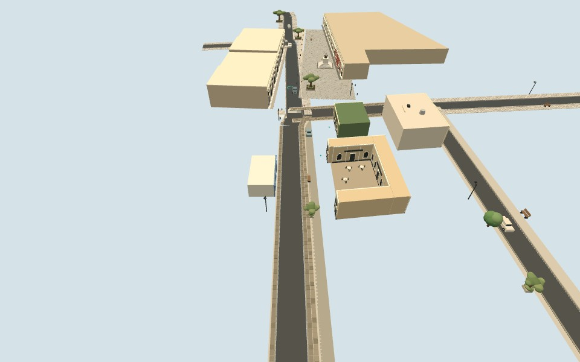
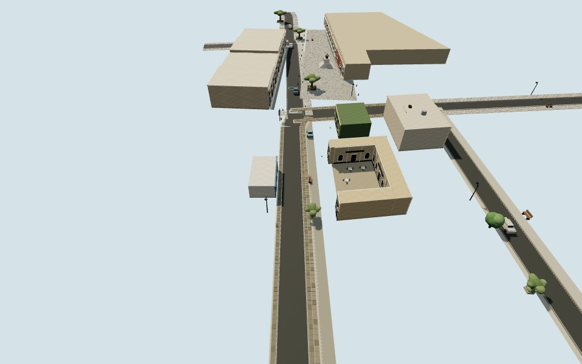

PBR recuperado
Se conserva el color, la rugosidad y el mapa de normal de piedra, asfalto y estuco. Las calles sin coordenadas de textura ya pueden mostrar su superficie.
PILOTO VISUAL 01 · 1 OCT 2026
Recuperamos los materiales y el relieve que se perdían al integrar el modelo al tablero. Esta prueba permite comparar el render anterior con la mejora, desde el mismo lugar.


RENDER ANTERIORPILOTO PBRR-001 · P10 · 29.0760107, −110.9536147 · rumbo oeste 265.85° · cuadra: altura 58 m
Capturas del modelo, no fotografías. La geometría es idéntica entre las dos versiones de cada vista: aquí se compara el render. Ambas incluyen el perfil de Chihuahua actualizado. El fondo vacío de la prueba aísla el modelo; en el tablero permanece el mapa de la ciudad debajo.
No se pudo cargar una vista. Puedes abrir el tablero aquí.
QUÉ CAMBIÓ EXACTAMENTE
Se conserva el color, la rugosidad y el mapa de normal de piedra, asfalto y estuco. Las calles sin coordenadas de textura ya pueden mostrar su superficie.
Sol cálido, luz de cielo más fría, sombras suaves de 2048² y exposición ACES 1.05. La sombra se calcula una vez y se reutiliza al navegar.
Matices procedurales de ±5% y una banda suave en la base. Es un ensayo visual; no representa daños reales ni usa fotos como textura.
LEVANTAMIENTO · LAS CUATRO RUTAS
Los 37 puntos coinciden con ejes compatibles de OSM. La coincidencia cartográfica no verifica alturas, huellas ni ancho libre de banquetas.
| Ruta | Puntos | Recorrido | Sección | Siguiente levantamiento |
|---|---|---|---|---|
| R-001 | 14 | 264 m | 194 m con perfiles previos | 70 m de Obregón al oeste de Juan Álvarez |
| R-002 | 10 | 173 m | 119 m estimados en Chihuahua | 55 m de Garmendia hacia Obregón |
| R-003 | 7 | 115 m | Eje OSM · sección pendiente | Garmendia, pasando por Serdán |
| R-000 PRUEBA | 6 | 106 m | Eje OSM · sección pendiente | Serdán hacia Guerrero, sin prolongar la ruta |
NUEVO PERFIL INDEPENDIENTE
123 m entre cruces OSM. Se conserva el eje y se estima cada lado por separado, con transiciones suaves de 8 m. Se eliminó la superposición con el constructor de rutas.
Estimación remota provisional: asfalto ±0.9 m; espacios laterales ±0.7 m. Sombras y arbolado limitan la lectura. El ancho aparente no equivale a paso libre verificado.
Fuente de consulta: World Imagery ↗ · Vantor / WV03, 16 ene 2024; resolución 0.31 m y precisión posicional 5 m. No se conservan imágenes del servicio.
SIGUIENTES MEJORAS